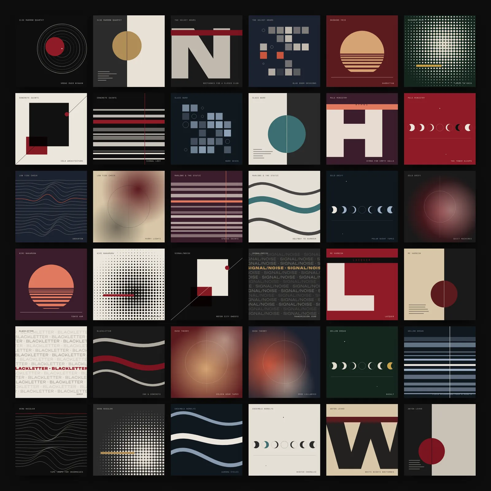
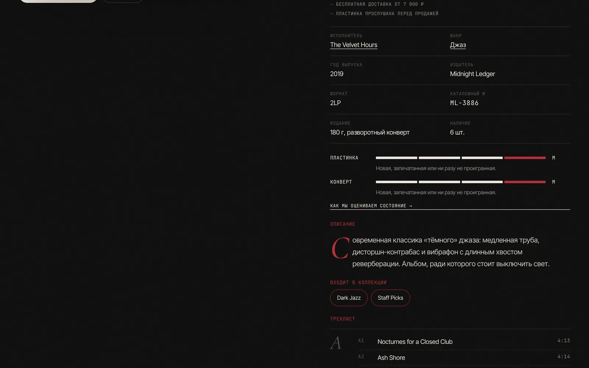
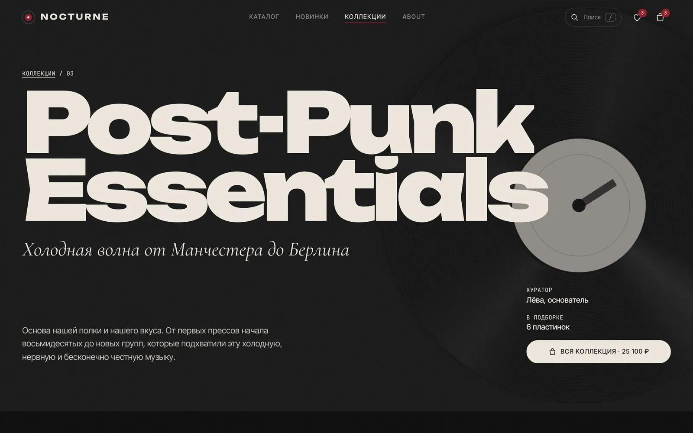
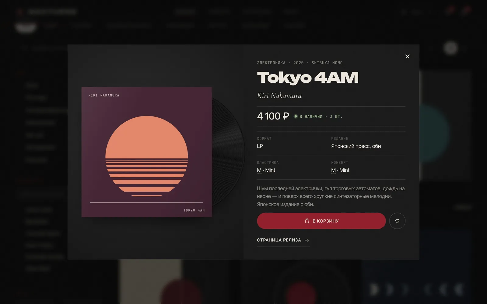
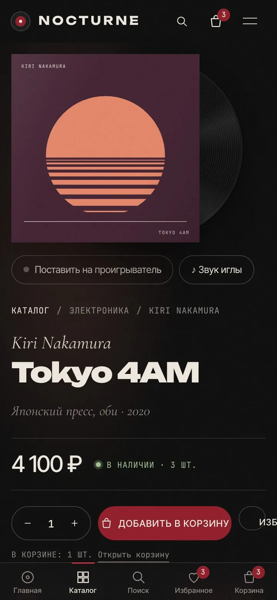

← Все работыСайты
NOCTURNE
Кейс: интернет-магазин виниловых пластинок, который читается как независимый музыкальный журнал и работает как полноценный магазин.

Задача
NOCTURNE продаёт винил коллекционерам и людям, для которых музыка — часть культуры, а не фон. В брифе было два требования, которые обычно тянут в разные стороны: атмосфера независимого журнала и удобство настоящего магазина.
Узнаваемый образ
Без одинаковых карточек и стандартных блоков — клиент заранее отверг шаблонные магазины.
Удобный каталог
Фильтры, сортировка, поиск и два вида просмотра.
Полный путь покупки
Корзина, избранное, оформление заказа. Бэкенда не было — всё работает на локальных данных.
- 11
- экранов, от главной до номера заказа
- 36
- релизов в демо-каталоге
- ≈70 KB
- весь сайт в сжатом виде
- 0
- внешних библиотек
Аудитория
| Кто | Что ищет | Ответ в интерфейсе |
|---|---|---|
| Коллекционер | Конкретный пресс, состояние диска и конверта, год | Два грейда Goldmine со шкалой, издание и каталожный номер, фильтр по состоянию |
| Меломан 18–40 | Открыть новое, понять, почему пластинка важна | Кураторские коллекции, редакционные подборки, «похожие альбомы» |
| Покупатель с телефона | Быстро найти и купить | Нижняя панель, фильтры в выдвижной панели, закреплённая кнопка покупки |
Идея
Журнал × магазин
Сайт свёрстан как выпуск журнала: у главной есть номер и дата, разделы пронумерованы, тексты набраны с буквицами и цитатами. Под этим слоем — строгая механика магазина: цена, наличие и кнопка покупки всегда на одном месте.
Редакция
Крупный гротеск и курсивный serif, асимметричные сетки, текст поверх изображения.
Аналог
Пластинка — сквозной элемент: выезжает из конверта, крутится, становится шторкой перехода.
Функция
Фильтры сохраняются в ссылке, у каждого состояния — пустого, «продано», ошибки — свой дизайн.
Визуальная система

36 обложек, нарисованных кодом
Фотографий не было, а стоковые картинки сразу превратили бы проект в шаблон. Каждая обложка строится из идентификатора релиза: 13 стилей, 12 палитр. На б/у конвертах проступает кольцо от диска — чем ниже грейд, тем заметнее.
Экраны






Мобильная версия



Движение
| Момент | Время | Что происходит |
|---|---|---|
| Заставка | 1.3 s | Счётчик 000→100, буквы поднимаются по одной |
| Переход | 0.4 + 0.6 s | Бордовая шторка с названием раздела |
| Карточка | 0.8 s | Конверт сдвигается, пластинка выезжает и проворачивается |
| В корзину | 0.7 s | Пластинка летит по дуге к иконке корзины |
Результат
Готов к бэкенду
Полный путь покупки работает: фильтры, корзина с учётом остатков, избранное, поиск, оформление заказа. Всё собрано на чистом HTML, CSS и JavaScript без библиотек; данные, состояние и интерфейс разделены, поэтому подключение API затрагивает один слой.
Магазин, в котором хочется остаться.
Открыта для новых проектов
Давайте сделаем
что-то заметное
Опишите задачу в паре предложений. Отвечаю в течение рабочего дня.